BROOKLYN MUSEUM ／ 向島工房
動画 8本
企画・構成・絵コンテ
2026年9月3日 第3版
株式会社B supply 宮下 詩織
6本＝参考動画あり（絵コンテ済） ／ 2本＝企画のみ
いただいた参考動画が、そのまま演出の指定になります。この資料は「何を、どの順で撮るか」だけを書いています。
旧「工程ASMRショート7本シリーズ」は廃止しました。まず下の4本から撮ります。
01
今日の服に、
合う色。
20秒 ／ 6カット
- 演出
- 服装が変わると、革の色も変わる。日常をポップに
- 対象
- 新規・リピーター
- 参考
- innovator SWEDEN
グリーンだけで、七十一色。
02
作っている音。
40秒 ／ 8カット
- 演出
- 工程を音で。コバ塗りのワンカットと、職人の声を入れる
- 対象
- 新規（まだ知らない人）
- 参考
- @kankula667／@blacktan_leather
一つの製品の、四割の時間は、この断面に使われます。
03
BRILLANT.
28秒 ／ 6カット
- 演出
- 黒の中に手だけ。高貴なエレガンス
- 対象
- メディア・ハイエンド層
- 参考
- delvaux「le Brillant Tempo」
染めて、磨いて、乾かして、また染める。
04
今日、
持って出るもの。
30秒 ／ 7カット
- 演出
- 鞄の中身。ドラマの1シーン
- 対象
- 仕事道具として買う人・贈る人
- 参考
- parisawangny「Gabrielle Tote」
十三リットル。千百六十グラム。
露 出 先
草ヶ谷さんInstagram ／ BROOKLYN公式Instagram（後日 YouTube・X・TikTok） ／ 永尾さんInstagram ／ B supply ホームページ ／ BROOKLYN ECサイト Promotionタブ（新設）
Ｉ Ｎ Ｓ Ｔ Ａ Ｇ Ｒ Ａ Ｍ に 出 す 順 番
① 色② 待てない③ 中身④ 音⑤ 黒
売り込みのない「色」から。Instagram経由の購入率は0.011%。まず保存される状態を作る。7本目の実測はEC商品ページに常設するので、この順番の外です。
1 / 10
全 体 像
8本の一覧
絵コンテ済 ＝ 参考動画があり、演出まで決まっているもの（6本） 企画のみ ＝ 参考動画が決まり次第、同じ形式で絵コンテを作成します（2本）
| # | タイトル | 尺・本数 | 対象 | この1本で言うこと | 主な露出先 | 参考動画リンク |
|---|
| 新 規 ・ リ ピ ー タ ー に 向 け て ── 先に撮る4本 |
| 1 | 今日の服に、合う色。 | 20秒 ×1 |
新規・リピーター |
服が変われば、合う革の色も変わる。同じ革・同じ色で財布からバッグまで揃う |
全媒体 |
記入欄
innovator SWEDEN（@__a.r10） |
| 2 | 作っている音。 | 40秒 ×1 |
新規（まだ知らない人） |
ここで作っている。工程の四割はこの断面に使われている |
EC Promotionタブ
公式Instagram |
youtube.com/shorts/c2mH8rStFCA
instagram.com/reel/DbAniDDyF0U コバ塗り・477万 |
| 3 | BRILLANT. | 28秒 ×1 |
メディア・ハイエンド層 |
工程が何度も繰り返されていること。商品は売らない |
公式Instagram
B supply HP |
instagram.com/reels/DWiwFp5DED-
delvaux |
| 4 | 今日、持って出るもの。 | 30秒 ×1 |
仕事道具として買う人・贈る人 |
A4もノートPCも入る。十三リットル、千百六十グラム |
全媒体 |
instagram.com/reels/DcOkNyyoFFJ
parisawangny |
| 新 規 の お 客 様 に 向 け て ── 参考動画あり。続けて撮れます |
| 7 | 主要品番の実測動画 | 25秒 ×3品番 |
新規（買う直前の人） |
朝、入れていくもの。入る量と重さを、動作だけで見せる |
EC商品ページ
カートボタン直下 |
instagram.com/reel/DZE-_hZuwXb 朝の出発前
instagram.com/reel/DaorwuKvWAj ASMR実測 |
| 8 | 認知動画
家まで、待てなかった。 | 18秒 ×1 |
まだ名前を知らない人 |
商品説明をひとつもせずに、欲しくさせる。開ける前と後の顔だけ |
Instagram広告
全媒体 |
instagram.com/reel/Dbi4WDONwhq
olga.loeffler・3.2万いいね |
| メ デ ィ ア 関 係 者 ・ Ｏ Ｅ Ｍ の 調 達 担 当 に 向 け て ── 参考動画待ち |
| 5 | コーポレートムービー | 2分 ×1
60秒短縮版 ×1 |
メディア・OEM・新規 |
何をしていて、誰がやっていて、何を大事にしている会社か。1979年からの実績 |
コーポレートサイト
YouTube・商談 |
記入欄 |
| 6 | OEM工房案内 | 2分20秒 ×1
展示会用無音版 ×1 |
OEMの調達・生産担当 |
量産も少量生産もできる。検品まで自社で完結している |
商談・展示会
提案資料 |
記入欄 |
今回は見送るもの（優先度が違うとのご判断） ── 店舗案内（表参道）／ 梱包から受け取りまで（贈る人向け）／ 採用ムービー。
ただし梱包は8本目のなかに入ります。開ける場面を撮るので、不織布・箱・リボンは自然に映ります。
2 / 10
議 論 の 結 果
6本を、同じブランドの動画に見せるために
映画監督／撮影監督／コピーライター／プロデューサー／宮下 の5名で確認しました。
1
色を持つのは、革だけ。
彩度があるのは革の色だけ。服・背景・小物の彩度は落とす。WBは4300Kで固定。オートにしない。
2
広角で撮らない。
全カット50mm相当以上。広角は空間が歪んで安く見える。寄りたいときは足で寄る。24fps／シャッター1/48。
3
最後の2秒は、全部同じ。
テロップ1.5秒 → ロゴ0.5秒。フェードは使わずカットで切り替える。並べて見たときに同じブランドだと分かる。
| 論点 | 結論 |
|---|
| 参考動画は演出言語がバラバラ（ポップ／音／高級／ドラマ／POV）。並べると誰の動画か分からなくなる |
上の3つだけを固定する。演出は変えてよい。固定するのは色・レンズ・終わり方の3つに絞る |
| オチが弱いと保存されない |
各本に一般の人が知らない事実を1つだけ置く。七十一色／四割／千百六十グラム。説明はしない |
| 2本目が、これまでのASMR投稿とかぶるのでは |
参考動画は完成品が実際に使われている場所で終わる。作業机で終わらせない。この型を守れば工程動画ではなくブランド動画になる |
| コバ塗りの参考動画が477万再生。2本目に足すか |
足す。塗った瞬間に断面の色が変わる ── 1カットの中でビフォーアフターが起きている。これが477万回見られた理由。磨くカットの前に置く（実際の工程順） |
| 8本目「認知動画」の方向 |
参考動画に合わせて「家まで、待てなかった。」に変更。前案（社名の由来）は取り下げ。商品説明がひとつもないのに欲しくなるほうが、認知としては強い |
| 4本目と7本目は同じ「鞄の中身」ではないか |
役割が違う。4本目は街・ドラマでInstagram向け。7本目は白い台・正面固定・秤でEC商品ページ向け。撮る場所も日も分ける |
使 わ な い 言 葉丁寧 こだわり 職人技 本物 想い ── 言った時点で伝わらなくなる
数 字 の 書 き 方テロップの数字は漢数字（四割・七十一色・千百六十グラム）。読む速度が落ち、記憶に残る
3 / 10
20秒 ／ 6カット
対象＝新規・リピーター ／ 全媒体
参考動画＝innovator SWEDEN（@__a.r10） URL未取得
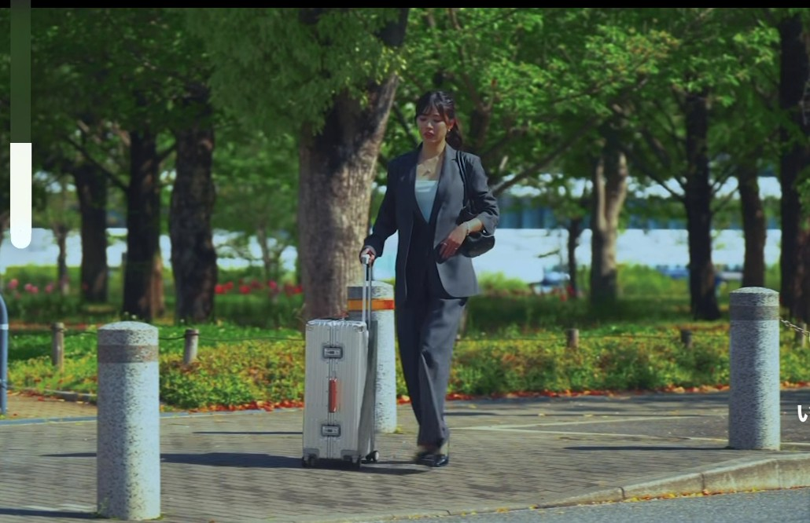
服装と持ち物が対で変わる
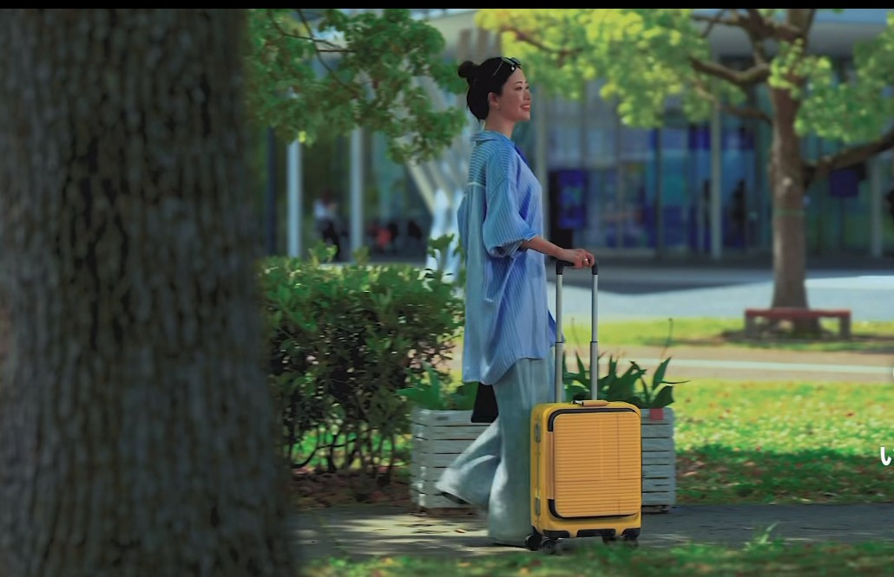
同じ構図・違う色
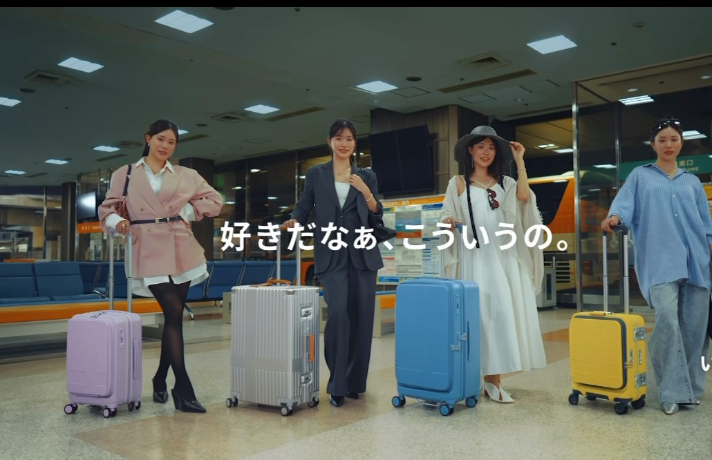
最後に全色が並ぶ
参考動画から抽出した静止画。アングル共有のための社内利用に限ります。
狙 い
売り込まない。保存されることだけを狙う。三脚を固定したまま服だけを替えるので、カメラは1ミリも動かさない。玄関1か所と街1か所で撮れる。
| C | 尺 | 画（何が映るか） | 音・演出 |
|---|
| 1 | 0-4秒 | 玄関。黒のコート。黒の財布をポケットに入れて出ていく | ドアの音。ここでBGMが入る |
| 2 | 4-8秒 | 同じ画角。ベージュのコート。キャメルの名刺入れ | 服だけが変わる。三脚は動かさない |
| 3 | 8-11秒 | 同じ画角。ネイビー。ネイビーのキーケース | 3回目で「同じ場所だ」と気づかせる |
| 4 | 11-14秒 | 同じ画角。グリーン。グリーンの財布 | ここに一番強い色を置く |
| 5 | 14-17秒 | 街を歩く。手元だけにピント。背景は流す | 街の音。唯一カメラが動くカット |
| 6 | 17-20秒 | 真俯瞰。4色が並ぶ → テロップ → ロゴ | BGMが締まる |
テ ロ ッ プ
グリーンだけで、七十一色。
同じ革・同じ色で財布・カードケース・キーケース・バッグが揃うことが、この1本の中身です。
4 / 10
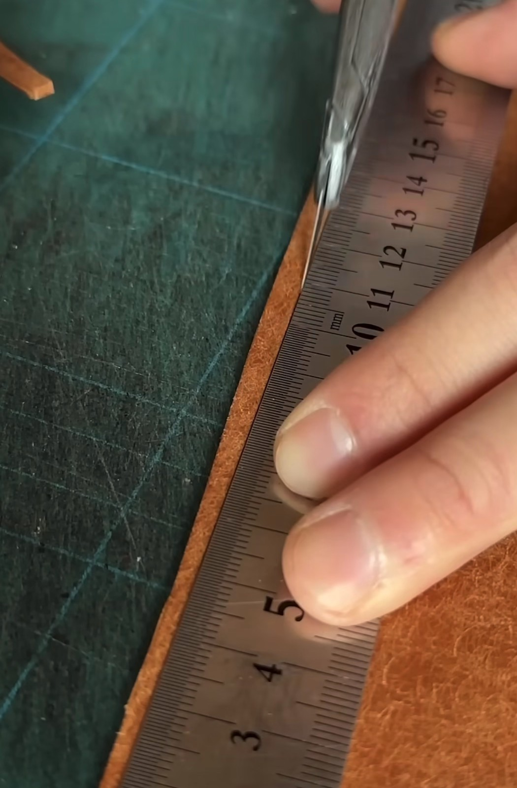
真俯瞰。金属定規と刃
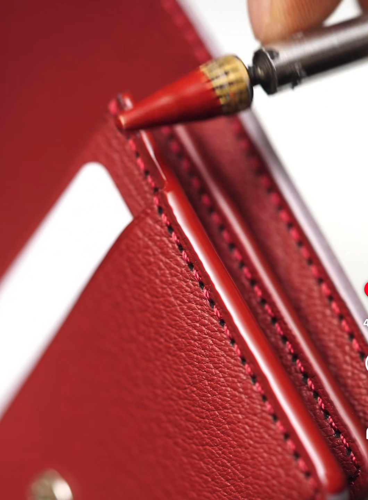
C5 コバ塗り。革と同色の塗料
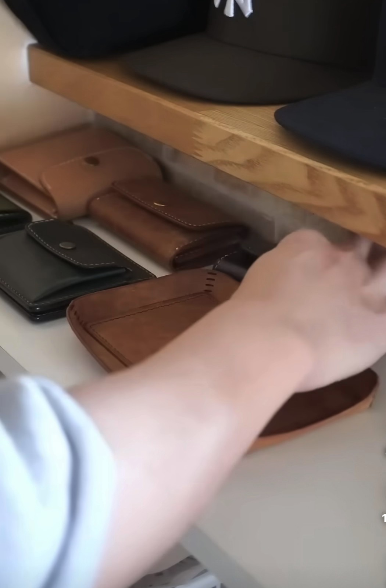
使われる場所で終わる
参考動画から抽出した静止画。アングル共有のための社内利用に限ります。
狙 い
アングルは真俯瞰と45度の2つだけ。音はカメラのマイクでは録れないので、スマホを手元30cmに置いて別録りする。
C5のコバ塗りが、この1本の核。塗料が乗った瞬間に断面の色が変わる ── 1カットの中でビフォーアフターが起きる。参考動画が477万回見られた理由がこれ。カメラを止めて長回し。
最後は作業机で終わらせない。完成品が使われている場所に置いて終える。
| C | 尺 | 画（何が映るか） | 音・演出 |
|---|
| 1 | 0-3秒 | 超マクロ。革包丁が革に入る瞬間。何を見ているか分からない距離 | 「スッ」の一音だけ。BGMなし |
| 2 | 3-9秒 | 真俯瞰。金属定規を当てて直線を一気に引く | 定規を置く音、刃の音。定規は金属 |
| 3 | 9-14秒 | 45度。角を丸く回して切る | ここからBGMが薄く入る |
| 4 | 14-19秒 | 真俯瞰。ミシン。針が上下する | ミシンの音が主役。BGMを下げる |
| 5 | 19-26秒 | コバ塗り。★核・7秒 断面にアプリケーターを当て、一気に引く。革と同じ色の塗料。塗った側と塗っていない側が同じ画面に入る | 擦れる音だけ。カメラを止めて長回し。カットを割らない |
| 6 | 26-31秒 | 超マクロ。コバを磨く | 摩擦音。塗り → 磨きの順で見せる |
| 7 | 31-35秒 | 手が止まる | 職人の声が一言だけ入る。台本は作らず、その場の一言をそのまま使う |
| 8 | 35-40秒 | 完成品が、デスクの上か店の棚に置かれる → テロップ → ロゴ | 置く音。工房の音が消える |
テ ロ ッ プ
一つの製品の、四割の時間は、この断面に使われます。
切り目コバ磨きが全工程の40%を占めることは公式サイトに記載があります。ここでしか言えない事実です。
5 / 10
 道具だけを並べる
道具だけを並べる
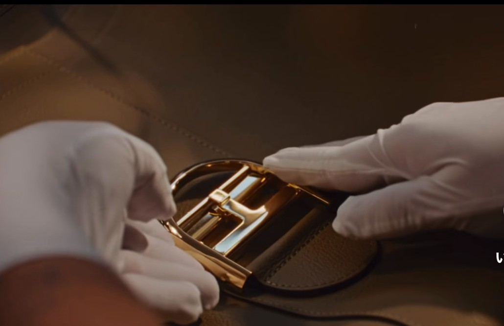
白手袋。金具に寄る
 完成品を1点だけ置く
完成品を1点だけ置く
参考動画から抽出した静止画。アングル共有のための社内利用に限ります。
狙 い
ブランドの格を上げる1本。黒い布1枚とライト1灯で撮れる。工房の蛍光灯は全部消す。顔と工房は一切映さない。映るのは手と、革と、金具だけ。この1本だけは商品を売らない。
| C | 尺 | 画（何が映るか） | 音・演出 |
|---|
| 1 | 0-5秒 | 真っ黒。細い光の帯が、革の断面だけを照らす | 無音から、低いBGMが立ち上がる |
| 2 | 5-10秒 | 手だけ。革を折り、角を作る | 背景は完全な黒。腕時計・指輪は外す |
| 3 | 10-15秒 | 白手袋で金具を持ち、取り付ける | 金属が触れる音 |
| 4 | 15-20秒 | 超マクロ。コバに染料を入れ、磨く | 光が断面に反射する角度を探す |
| 5 | 20-24秒 | 完成品が黒の中に置かれる。上から1灯だけ | 置く音。BGMがピークへ |
| 6 | 24-28秒 | テロップ → ロゴ | BGM終わり |
テ ロ ッ プ
染めて、磨いて、乾かして、また染める。
この4語だけで、コバ磨きが何度も繰り返される工程だと伝わります。回数も時間も書きません。
6 / 10
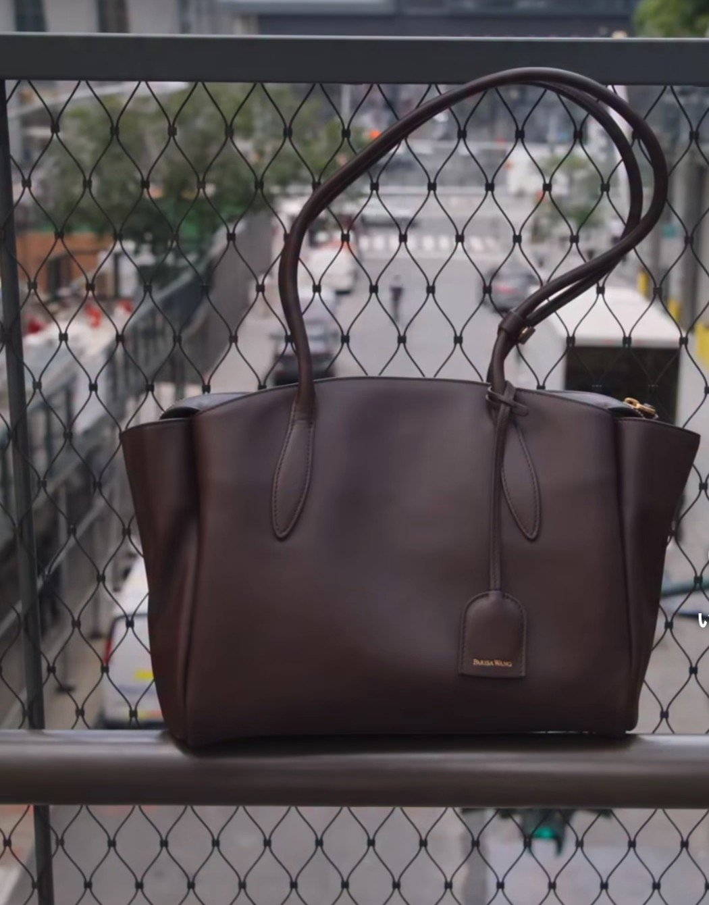
街を背景に置く
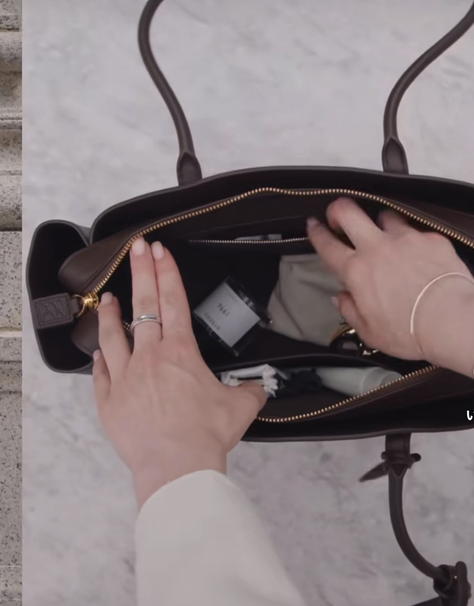
手が入り、中身が見える
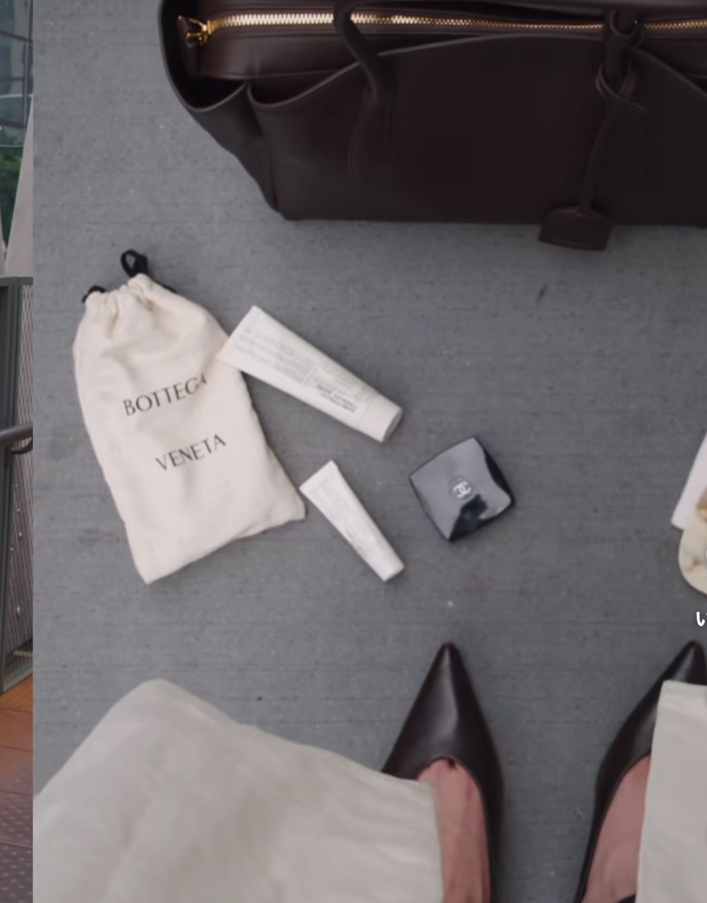
中身を全部並べる
参考動画から抽出した静止画。アングル共有のための社内利用に限ります。
狙 い
買う前の不安を消す1本。レビューにも「PCが入るか気になった」とあります。スペックを読ませず、入る動作だけで見せる。街で撮るのがこの1本。白い台で撮る7本目とは、場所も日も分けます。
| C | 尺 | 画（何が映るか） | 音・演出 |
|---|
| 1 | 0-5秒 | 手すりにバッグを置く。背景の街（車・人）をボカして流す | 街の音。ここでBGMが入る |
| 2 | 5-9秒 | 人の隣に置き、肩にかける | 人と並べないと大きさは伝わらない |
| 3 | 9-13秒 | 真俯瞰。開いた鞄に手が入り、A4とノートPCを入れる | 入る瞬間を止めずに撮る。1カットで |
| 4 | 13-18秒 | 寄り。内ポケットに名刺入れ・鍵・携帯を入れる | 整理された状態を見せる |
| 5 | 18-25秒 | 真俯瞰のフラットレイ。バッグと中身が全部並ぶ | 置く音が続く。ここが一番長い |
| 6 | 25-28秒 | 肩にかけて歩き出す。足元から見上げる | 唯一カメラが動くカット |
| 7 | 28-30秒 | テロップ → ロゴ | BGMが締まる |
テ ロ ッ プ
十三リットル。千百六十グラム。
小さく添える ── 返品送料無料 ／ 分割払い可。最後に不安を消して終わります。
7 / 10
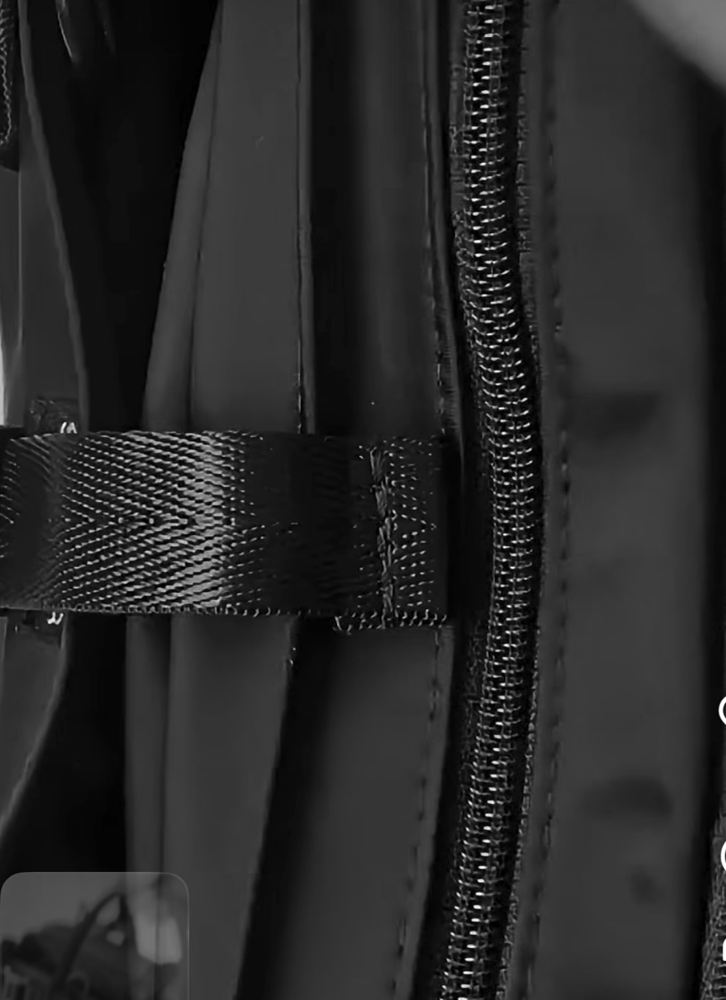
C1 モノクロの超マクロ
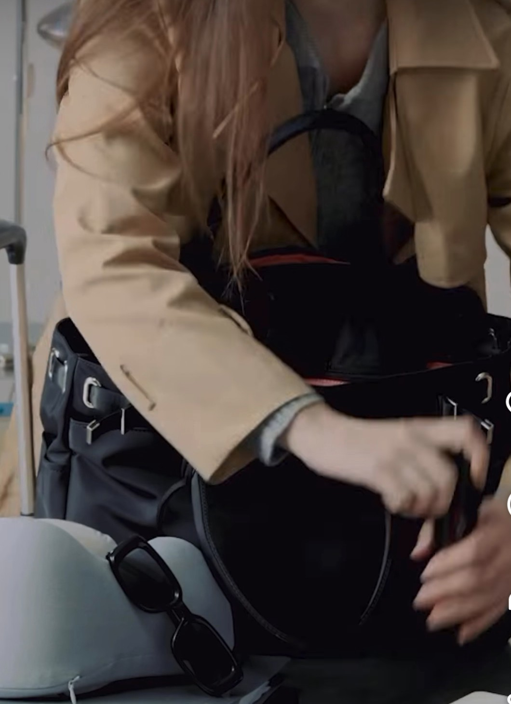
正面固定。入れていく
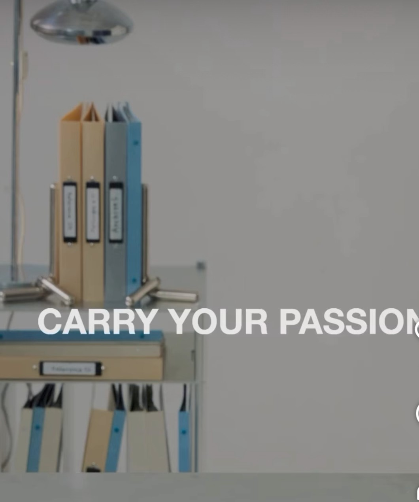
人が出て、鞄だけ残る
参考動画から抽出した静止画。アングル共有のための社内利用に限ります。
狙 い
購入転換率が0.263%。前年0.583%から半減しています。写真では入る量が伝わらない。
白い台の上、正面固定。カメラは一度も動かさない。3品番を同じ画角・同じ小物で撮るので、並べたときに大きさの差がそのまま分かります。
冒頭3秒はモノクロで入り、引いた瞬間にカラーへ。何の鞄か分からない状態から始めます。
| C | 尺 | 画（何が映るか） | 音・演出 |
|---|
| 1 | 0-3秒 | 超マクロ。ファスナーの歯、型押しのロゴ、ハンドルの付け根。モノクロ | 金具の音だけ。BGMなし |
| 2 | 3-6秒 | 引く。カラーに変わる。白い台の上に、鞄が1つだけ置かれている | ここでBGMが入る。品名テロップ |
| 3 | 6-11秒 | 正面固定。コートの人が入ってきて、A4書類とノートPCを入れる | 朝の光。顔は入れない。肩から下だけ |
| 4 | 11-16秒 | 同じ画角のまま。手帳・鍵・サングラス・ペンが次々に入る | 入れる音を1つずつ拾う |
| 5 | 16-20秒 | 秤に載せる。千百六十グラムの数字が読める | 表示にピント。数字が確定する音 |
| 6 | 20-23秒 | 人がフレームから出る。鞄だけが残る | 足音が遠ざかる。台は動かさない |
| 7 | 23-25秒 | テロップ → ロゴ | BGMが締まる |
テ ロ ッ プ
入れ終えて、千百六十グラム。
小さく添える ── A4・13インチPC対応 ／ 返品送料無料。3品番＝ロワイヤルMトート・ベルシートート・Lジップ。
8 / 10
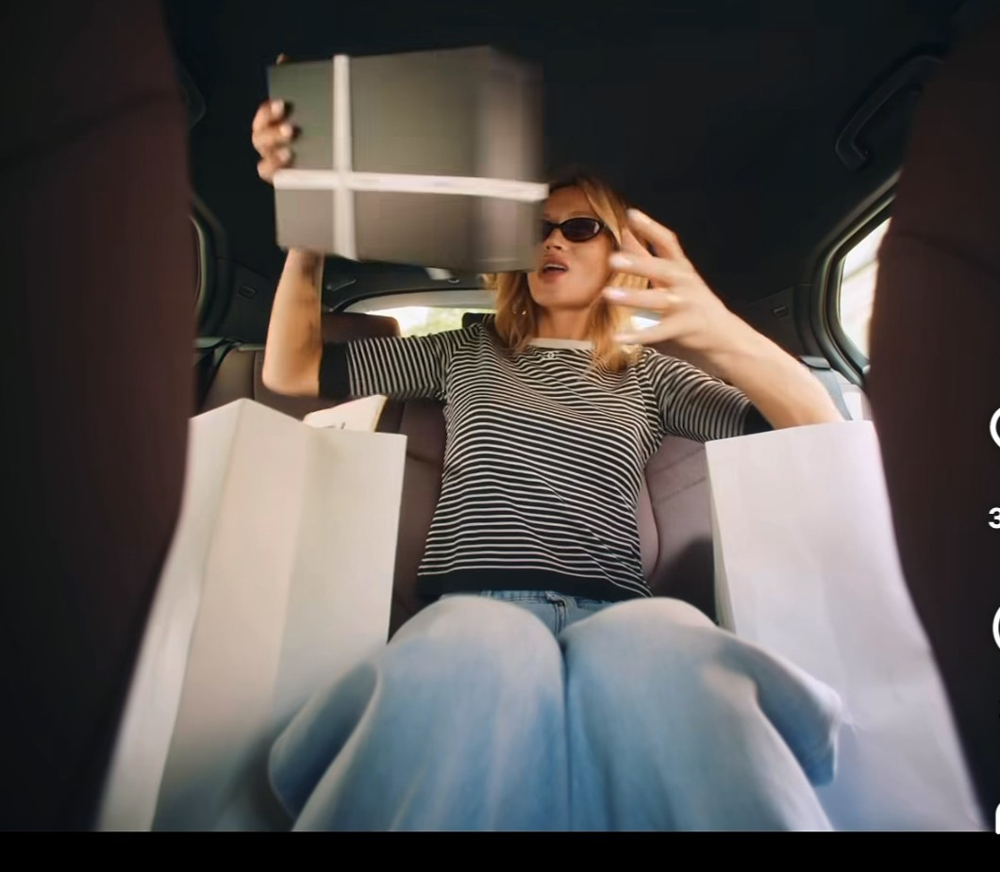
車内。膝の上に紙袋
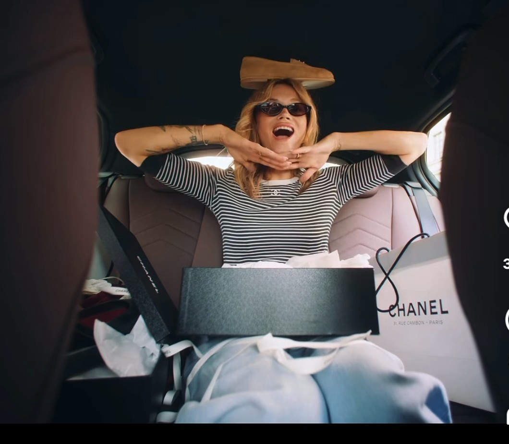
開けた瞬間の顔
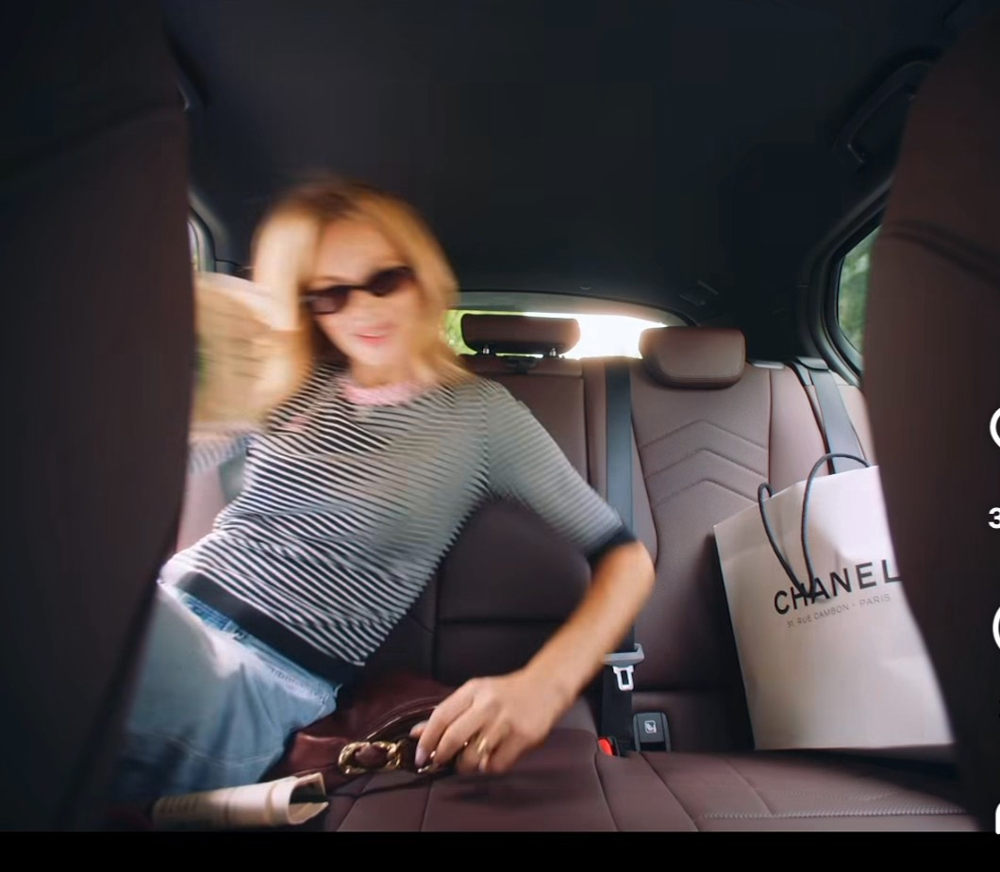
取り出して、光にかざす
参考動画から抽出した静止画。アングル共有のための社内利用に限ります。
狙 い
商品説明をひとつもしない。買った直後、家まで待てずに車の中で開けてしまう18秒。参考動画が3.2万いいねを取ったのは、説明ではなく顔の変化を見せているからです。
BGMを入れない。車内の環境音と、紙・リボン・革の音だけ。BGMを足した瞬間に広告になります。
8本のうち顔を映す唯一の動画。サングラスで目線を外せば、社内の方でも成立します。
| C | 尺 | 画（何が映るか） | 音・演出 |
|---|
| 1 | 0-3秒 | 車の後部座席。膝の上にBROOKLYNの紙袋。窓の外が流れている | 車内の環境音だけ。BGMなし |
| 2 | 3-6秒 | 袋から箱を出し、リボンをほどく。ここは手だけ | 紙の音、紐を引く音 |
| 3 | 6-9秒 | 蓋を開ける。開けた瞬間の顔。★核 息を呑む。声は出さない | 無音の一拍を作る。ここだけ顔を映す |
| 4 | 9-13秒 | 財布を取り出し、窓の光にかざす。断面が光る | 革がこすれる音 |
| 5 | 13-16秒 | その場でカードを差し込む。もう使っている | カードが入る音。ここが落ち |
| 6 | 16-18秒 | 窓の外に目をやる → テロップ → ロゴ | 環境音のまま終わる |
テ ロ ッ プ
家まで、待てなかった。
この1本には不織布・箱・リボンが自然に映るので、見送った「梱包から受け取りまで」の役割も半分果たします。
9 / 10
参 考 動 画 待 ち 5 ・ 6 本 目
企画だけ、先に置いておくもの
参考動画をいただき次第、他の6本と同じ形式で絵コンテを作成します。絵コンテの写真は、いただいた参考動画から抽出します。
05
コーポレートムービー
2分 ×1 ／ 60秒短縮版 ×1 対象＝メディア関係者・OEMの調達担当・新規
- なぜ要るか
- 会社を1本で説明できる映像がない。公式サイトのHISTORYページは中身が作られないまま公開されています（2026年8月時点）
- 入れるもの
- 1979年創業／SHIPS・BEAMS・UNITED ARROWS・Paul Smithのオリジナル商品を企画・生産／2011年ラルフローレン・ジャパン国内全直営店のカルトン／向島の工房と表参道の店舗／永尾社長と佐藤さんの顔と声
- 入れないもの
- 工程の詳しい説明、技術の解説、商品スペック。それは他の動画の役割です
- 先に要ること
- お二人の収録を30分ずつ。使うのは各10秒ほどですが、単独インタビュー動画にそのまま展開できる素材になります
参 考 動 画 リ ン ク
06
OEM工房案内
2分20秒 ×1 ／ 展示会用の無音版 ×1 対象＝OEMの調達・生産担当
- なぜ要るか
- OEMの粗利は36%。自社ブランドの財布・小物は76〜93%あります。訪問前に体制を伝えて、価格ではなく品質で選ばれる状態を作ります
- 入れるもの
- 量産（金型裁断・ミシン）と少量生産（革包丁・手縫い）の両方に対応できること／漉き・貼り合わせ・目止め・コバ磨きまで自社で完結／検品の場面を具体的に
- いちばん重要なカット
- 職人が縫い目と断面を目で確かめる場面。ここで作業音を消します
- 先に要ること
- 工房の外観と全景。撮影して差し支えない範囲の確認
参 考 動 画 リ ン ク
NEXT
次にお願い
したいこと
これが揃えば、8本すべて絵コンテまで作れます
- 1
- 1本目の参考動画URL
innovator SWEDEN（@__a.r10）のリールです。動画は拝見しているので、URLだけあれば資料に載せられます
- 2
- 5・6本目の参考動画URL
方向が決まっていなければ、こちらから3案お出しします
- 3
- 8本目の出演者
顔が映る唯一の動画です。社内の方でよいか、外部にお願いするか
- 4
- 2本目のコバ塗りの色
参考動画は赤い革に赤い塗料。どの色で撮るかだけ決めてください
10 / 10